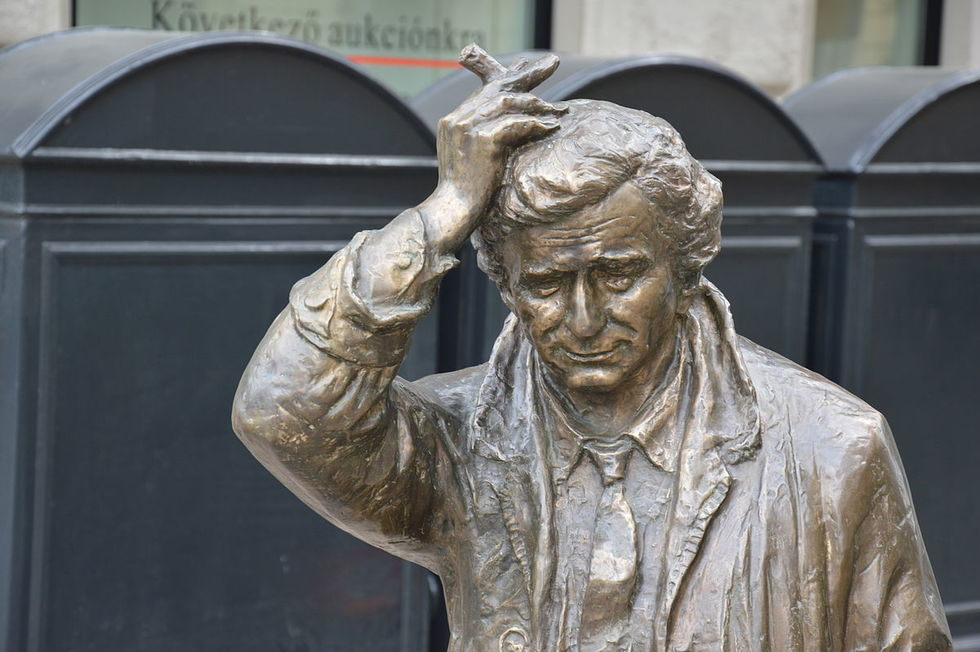

Did you know these interesting facts about “Columbo”???
Columbo on stage at the Frank Sinatra roast
Did you know that Lt. Columbo appeared on stage at a Frank Sinatra roast? While it’s definitely unorthodox for a lieutenant to “roast” a famous singer like “The Chairman”, the crowd seemed to love it.
Columbo statue in Hungary
Did you know that there is a Colubmo statue in Budapest, Hungary? Supposedly the actor that played Columbo, Peter Falk, is related to 19th-century Hungarian political figure Miksa Falk. The statue resides on Falk Miksa Street and nearby is a statue of a dog modeled after a local dog named "Franzi".

"Mrs. Columbo" spin-off
Did you know that there was a TV spin-off of "Columbo" called "Mrs. Columbo"? That's right, it appears that our favorite lieutenant's wife also got in the mystery solving act in her free time! The show was eventually changed to "Kate The Detective" and then "Kate Loves A Mystery" after a supposed off-screen divorce between the Columbos! Ultimately the show only lasted 13 episodes and Peter Falk, who played Lt. Columbo, characterized it as a "bad idea" and "disgraceful".
Have any interesting facts about “Columbo”? Email at columboday@aol.com to get them included here!